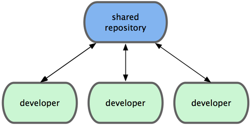

分布式工作流程¶
同传统的集中式版本控制系统（CVCS）不同，开发者之间的协作方式因着 Git 的分布式特性而变得更为灵活多样。在集中式系统上，每个开发者就像是连接在集线器上的节点，彼此的工作方式大体相像。而在 Git 网络中，每个开发者同时扮演着节点和集线器的角色，这就是说，每一个开发者都可以将自己的代码贡献到另外一个开发者的仓库中，或者建立自己的公共仓库，让其他开发者基于自己的工作开始，为自己的仓库贡献代码。于是，Git 的分布式协作便可以衍生出种种不同的工作流程，我会在接下来的章节介绍几种常见的应用方式，并分别讨论各自的优缺点。你可以选择其中的一种，或者结合起来，应用到你自己的项目中。
集中式工作流¶
通常，集中式工作流程使用的都是单点协作模型。一个存放代码仓库的中心服务器，可以接受所有开发者提交的代码。所有的开发者都是普通的节点，作为中心集线器的消费者，平时的工作就是和中心仓库同步数据（见图 5-1）。
图 5-1. 集中式工作流
如果两个开发者从中心仓库克隆代码下来，同时作了一些修订，那么只有第一个开发者可以顺利地把数据推送到共享服务器。第二个开发者在提交他的修订之前，必须先下载合并服务器上的数据，解决冲突之后才能推送数据到共享服务器上。在 Git 中这么用也决无问题，这就好比是在用 Subversion（或其他 CVCS）一样，可以很好地工作。
如果你的团队不是很大，或者大家都已经习惯了使用集中式工作流程，完全可以采用这种简单的模式。只需要配置好一台中心服务器，并给每个人推送数据的权限，就可以开展工作了。但如果提交代码时有冲突， Git 根本就不会让用户覆盖他人代码，它直接驳回第二个人的提交操作。这就等于告诉提交者，你所作的修订无法通过快近（fast-forward）来合并，你必须先拉取最新数据下来，手工解决冲突合并后，才能继续推送新的提交。绝大多数人都熟悉和了解这种模式的工作方式，所以使用也非常广泛。
集成管理员工作流¶
由于 Git 允许使用多个远程仓库，开发者便可以建立自己的公共仓库，往里面写数据并共享给他人，而同时又可以从别人的仓库中提取他们的更新过来。这种情形通常都会有个代表着官方发布的项目仓库（blessed repository），开发者们由此仓库克隆出一个自己的公共仓库（developer public），然后将自己的提交推送上去，请求官方仓库的维护者拉取更新合并到主项目。维护者在自己的本地也有个克隆仓库（integration manager），他可以将你的公共仓库作为远程仓库添加进来，经过测试无误后合并到主干分支，然后再推送到官方仓库。工作流程看起来就像图 5-2 所示：
- 项目维护者可以推送数据到公共仓库 blessed repository。
- 贡献者克隆此仓库，修订或编写新代码。
- 贡献者推送数据到自己的公共仓库 developer public。
- 贡献者给维护者发送邮件，请求拉取自己的最新修订。
- 维护者在自己本地的 integration manger 仓库中，将贡献者的仓库加为远程仓库，合并更新并做测试。
- 维护者将合并后的更新推送到主仓库 blessed repository。
图 5-2. 集成管理员工作流
在 GitHub 网站上使用得最多的就是这种工作流。人们可以复制（fork 亦即克隆）某个项目到自己的列表中，成为自己的公共仓库。随后将自己的更新提交到这个仓库，所有人都可以看到你的每次更新。这么做最主要的优点在于，你可以按照自己的节奏继续工作，而不必等待维护者处理你提交的更新；而维护者也可以按照自己的节奏，任何时候都可以过来处理接纳你的贡献。
司令官与副官工作流¶
这其实是上一种工作流的变体。一般超大型的项目才会用到这样的工作方式，像是拥有数百协作开发者的 Linux 内核项目就是如此。各个集成管理员分别负责集成项目中的特定部分，所以称为副官（lieutenant）。而所有这些集成管理员头上还有一位负责统筹的总集成管理员，称为司令官（dictator）。司令官维护的仓库用于提供所有协作者拉取最新集成的项目代码。整个流程看起来如图 5-3 所示：
一般的开发者在自己的特性分支上工作，并不定期地根据主干分支（dictator 上的 master）衍合。
- 副官（lieutenant）将普通开发者的特性分支合并到自己的 master 分支中。
- 司令官（dictator）将所有副官的 master 分支并入自己的 master 分支。
- 司令官（dictator）将集成后的 master 分支推送到共享仓库 blessed repository 中，以便所有其他开发者以此为基础进行衍合。

图 5-3. 司令官与副官工作流
这种工作流程并不常用，只有当项目极为庞杂，或者需要多级别管理时，才会体现出优势。利用这种方式，项目总负责人（即司令官）可以把大量分散的集成工作委托给不同的小组负责人分别处理，最后再统筹起来，如此各人的职责清晰明确，也不易出错（译注：此乃分而治之）。
以上介绍的是常见的分布式系统可以应用的工作流程，当然不止于 Git。在实际的开发工作中，你可能会遇到各种为了满足特定需求而有所变化的工作方式。我想现在你应该已经清楚，接下来自己需要用哪种方式开展工作了。下节我还会再举些例子，看看各式工作流中的每个角色具体应该如何操作。